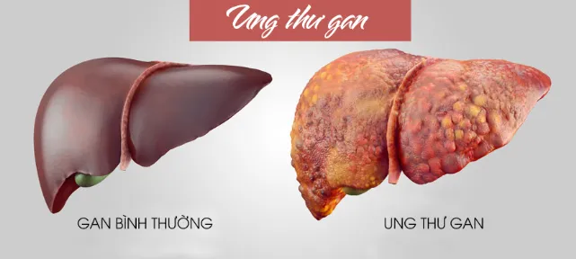
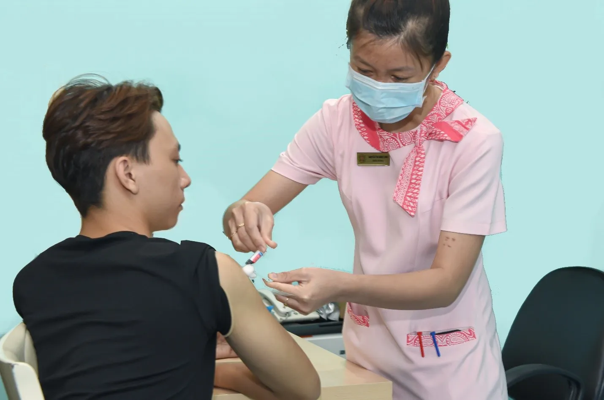
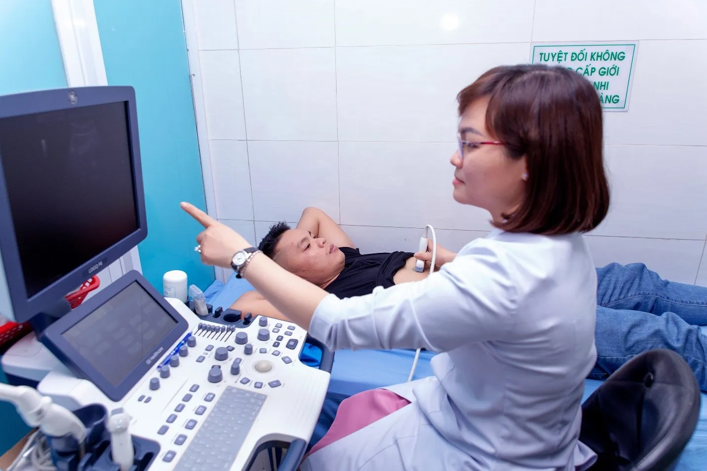
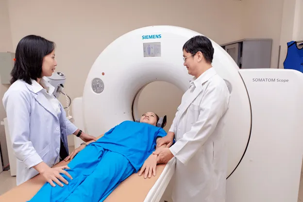

PHÒNG NGỪA UNG THƯ BIỂU MÔ TẾ BÀO GAN
1. UNG THƯ BIỂU MÔ TẾ BÀO GAN LÀ GÌ?
Ung thư gan được phân làm 2 loại: Ung thư gan nguyên phát và thứ phát.

- Ung thư gan thứ phát: là do các tế bào ung thư ở các bộ phận khác của cơ thể đi vào gan gây ra các khối u di căn. Các tế bào ung thư phát triển gây ảnh hưởng đến mô bình thường liền kề và có thể lây lan sang các vùng khác của gan cũng như các cơ quan bên ngoài gan.
- Ung thư gan nguyên phát: là bệnh lý ác tính của gan xảy ra khi tế bào bình thường của gan trở nên bất thường về hình thái và chức năng.
Ung thư gan nguyên phát gồm 3 loại chính: ung thư biểu mô tế bào gan (HCC: Hepatocellular Carcinoma), ung thư biểu mô đường mật và u nguyên bào gan.
Trong bài này chúng tôi sẽ đề cập đến ung thư biểu mô tế bào gan – là loại tổn thương thường gặp nhất trong các loại ung thư tại gan.
Ung thư biểu mô tế bào gan là bệnh diễn tiến thầm lặng, tỷ lệ tử vong cao nhưng đây là bệnh có thể phòng ngừa và điều trị được nếu được phát hiện sớm và kiểm soát tốt các yếu tố nguy cơ.
2. CÁC NGUYÊN NHÂN GÂY UNG THƯ BIỂU MÔ TẾ BÀO GAN?
Có nhiều nguyên nhân và yếu tố nguy cơ có thể dẫn đến ung thư gan biểu mô tế bào gan. Trong đó, nhiễm virus viêm gan B, virus viêm gan C, độc tố Aflatoxin, rượu bia được xem là những yếu tố nguy cơ thường gặp. Ngày nay, bệnh gan nhiễm mỡ không do rượu cũng được xem là yếu tố nguy cơ gây xơ gan và ung thư gan.
Virus viêm gan B là nguyên nhân gây bệnh gan mạn thường gặp nhất làm tăng nguy cơ biến chứng xơ gan và ung thư gan. Tỉ lệ nhiễm virus B ở người lớn tại Việt Nam khoảng 8,2-19% theo số liệu của Tổ chức y tế thế giới (WHO) năm 2016.
Virus viêm gan C chiếm tỉ lệ thấp hơn. Sau 10-20 năm,10-40% bệnh nhân nhiễm virus viêm gan C mạn tính sẽ tiến triển thành xơ gan, ung thư gan.
Aflatoxin là độc tố do nấm mốc có thể gặp trong các loại ngũ cốc như bắp, gạo, đậu phộng, hạt hướng dương… bảo quản chưa tốt, đã lên mốc. Nhiều người cho rằng chỉ cần loại bỏ mốc và nấu chín thì ăn sẽ không sao, thật ra Aflatoxin vẫn còn nguyên, khi vào cơ thể có thể gây ung thư gan. Đáng lưu ý nếu người nhiễm virus viêm gan B lại nhiễm độc tố aflatoxin thì nguy cơ ung thư gan cao gấp nhiều lần người chỉ nhiễm virus viêm gan B.
Rượu bia cũng được xem là một trong những nguyên nhân gây ra xơ gan và ung thư gan. Đặc biệt, ở người uống nhiều rượu bia kèm tiền sử bệnh viêm gan do virus viêm gan B, C thì nguy cơ và thời gian chuyển sang ung thư gan sẽ nhanh hơn rất nhiều.
Bệnh gan nhiễm mỡ không do rượu (NAFLD: Non Alcoholic Fatty Liver Disease) đang dần thành nguyên nhân chính gây bệnh gan mạn trên thế giới. Trong 2 thập kỷ qua, bệnh gan nhiễm mỡ không do rượu diễn tiến thành viêm gan nhiễm mỡ không do rượu (NASH: Non Alcoholic Steatohepatitis), xơ gan và ung thư gan.
3. CÁCH PHÒNG NGỪA UNG THƯ BIỂU MÔ TẾ BÀO GAN?
Virus viêm gan B, C có thể lây từ người này sang người khác qua truyền máu, do quan hệ tình dục, trẻ sơ sinh có thể bị lây nhiễm từ mẹ. Do đó, tiêm vaccine ngừa viêm gan virus B cho trẻ em là cần thiết và thai phụ cần kiểm tra, theo dõi nếu có nhiễm viêm gan virus B.

Người lớn nên tầm soát viêm gan virus B, nếu không có kháng thể bảo vệ nên tiêm ngừa.
Gia đình có người mắc ung thư gan: những người thân trong gia đình nên đến cơ sở y tế tầm soát viêm gan siêu vi B, C.
Nhiễm virus B, C ổn: nên hạn chế tối đa bia, rượu và hạn chế các thức ăn quá béo. Cần thử máu, siêu âm bụng/ 6 tháng hay khi có bất thường.
Viêm gan virus B mạn: Uống thuốc ức chế virus khi có chỉ định của bác sĩ liên tục, theo dõi định kỳ thử máu, siêu âm bụng/ 3-6 tháng và không tự ý ngưng thuốc.
Viêm gan virus C mạn: điều trị càng sớm càng tốt bằng thuốc uống 3- 6 tháng, chi phí thấp, dễ bảo quản, ít tác dụng phụ.
Không sử dụng các loại ngũ cốc như bắp, gạo, đậu phộng, hạt hướng dương… đã lên mốc, dù đã rửa sạch và nấu chín, sản phẩm nguồn gốc không rõ ràng.
Hạn chế sử dụng các đồ uống có cồn. Mức tối đa an toàn của rượu hoặc bia:
Nam: dưới 3 lon bia/ ngày (lon 330ml), dưới 3 ly rượu vang/ ngày (1 ly rượu vang 135ml), dưới 5 ly rượu gạo/ ngày (1 ly rượu gao 15-25ml).
Nữ: dưới 2 lon bia/ ngày (lon 330ml), dưới 2 ly rượu vang/ ngày (1 ly rượu vang 135ml), dưới 3 ly rượu gạo/ ngày (1 ly rượu gao 15-25ml).
Nên điều trị bệnh gan nhiễm mỡ không do rượu (NAFLD), viêm gan nhiễm mỡ không do rượu (NASH) vì các bệnh này làm tăng nguy cơ ung thư gan nhất là khi đã có xơ gan. Bệnh đái tháo đường, béo phì cũng làm tăng nguy cơ ung thư gan trên các bệnh nhân bị viêm gan nhiễm mỡ không do rượu (NASH).
4. TẦM SOÁT UNG THƯ BIỂU MÔ TẾ BÀO GAN NHƯ THẾ NÀO?
A. ĐỐI TƯỢNG NÀO CẦN TẦM SOÁT?
Tất cả mọi đối tượng đều cần tầm soát bệnh ung thư gan và các bệnh lý về gan, đặc biệt là nhóm đối tượng có nguy cơ như xơ gan, nhiễm virus viêm gan B, C, nghiện rượu, gan nhiễm mỡ.
B. CẦN TẦM SOÁT NHƯ THẾ NÀO?
Xét nghiệm công thức máu, men gan (AST, ALT), siêu âm bụng mỗi 6 tháng.

Riêng nhóm bệnh nhân xơ gan, nhiễm virus viêm gan B, C, nghiện rượu, gan nhiễm mỡ cần theo dõi thêm dấu ấn đặc hiệu của ung thư gan AFP mỗi 6 tháng.
Nếu AFP tăng nhưng không phát hiện u gan bằng siêu âm bụng, cần kiểm tra thường xuyên hơn như mỗi 3 tháng hoặc nên chụp CT scan bụng có cản quang hoặc MRI bụng có tiêm cản từ tùy tình trạng bệnh nhân.
Nếu phát hiện có tổn thương nghi ngờ ung thư gan và/hoặc giá trị các chỉ số sinh học AFP tăng thì chụp CT scan bụng có cản quang hoặc MRI bụng là cần thiết để xác chẩn.

5. UNG THƯ BIỂU MÔ TẾ BÀO GAN CÓ THỂ ĐIỀU TRỊ ĐƯỢC?
Ung thư gan nếu ở thời kỳ sớm và phần gan lành còn tốt, chưa xơ gan điều trị khá tốt, bệnh nhân sống được sau 5 – 7 năm.
Hiện nay có nhiều phương pháp điều trị ung thư biểu mô tế bào gan, phù hợp với từng giai đoạn bệnh. Bệnh nhân nên tuân thủ lời khuyên và lịch tái khám của bác sĩ.
Cắt bỏ phần gan có khối u hoặc ghép gan.
Hủy khối u bằng sóng cao tần (RFA: Radiofrequency ablation), tiêm chất đông lạnh (cryotherapy), cồn (PEI) hay chất phóng xạ vào khối u.
Phương pháp TACE (Trans-Arterial Chemo-Embolization): bơm thuốc vào khối u.
Xạ trị.
Điều trị toàn thân – hóa trị.

Các tin khác

ĐĂNG KÝ NHẬN BẢN TIN

Phòng Khám Đa Khoa Đại Phước
- 829 đường 3 tháng 2, Phường Minh Phụng, Thành phố Hồ Chí Minh
- 1900 599 941 - 0938 829 831
- (028) 3955 7999
- info@ytedaiphuoc.vn
-

6:00 - 11:30 (Chủ Nhật)


GPKD số : 0312023683 cấp ngày: 29/10/2012 Bởi Sở Kế Hoạch và Đầu Tư TP.Hồ Chí Minh
Đại diện: Tống Nguyễn Diễm Hồng